The Battery Energy Storage Systems (BESS) sector has reached an inflection point where bankability is no longer a simple yes-or-no question. Instead, it requires a nuanced understanding of revenue models, risk mitigation strategies, and market dynamics that have evolved significantly throughout 2024 and 2025. For investors evaluating this asset class, the bankability equation depends heavily on how well technical risks are managed and whether revenue streams can be adequately de-risked through contractual arrangements.
The Bankability Question: From Skepticism to Pragmatism
Historically, securing project financing for BESS has been challenging compared to mature renewable technologies like solar and wind. The fundamental issue stems from two core barriers: first, BESS technology's relatively recent track record meant that lenders remained risk-averse; second, and more importantly, the revenue structure for battery projects is fundamentally different from generating assets. Unlike solar or wind farms that produce electricity continuously, BESS systems act as arbitrage assets—buying power at low prices and selling at higher prices—which introduces inherent unpredictability that traditional lenders struggle to underwrite.
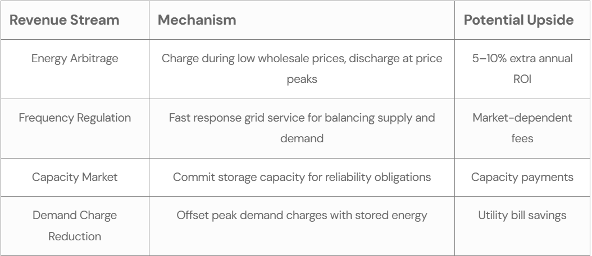
However, this landscape has shifted dramatically. Recent financing success stories and improved market fundamentals suggest that BESS projects are increasingly bankable, provided investors address specific risk categories and structure their revenue models appropriately. The critical distinction today is no longer whether BESS can attract capital, but rather under what conditions and at what cost of capital it can do so.
Financing has evolved from being the biggest hurdle for battery storage deployment to a more manageable challenge, with banks and institutional investors now prepared to support projects when key risks are properly addressed. This represents a fundamental confidence shift in the sector, though challenges remain for certain project types.
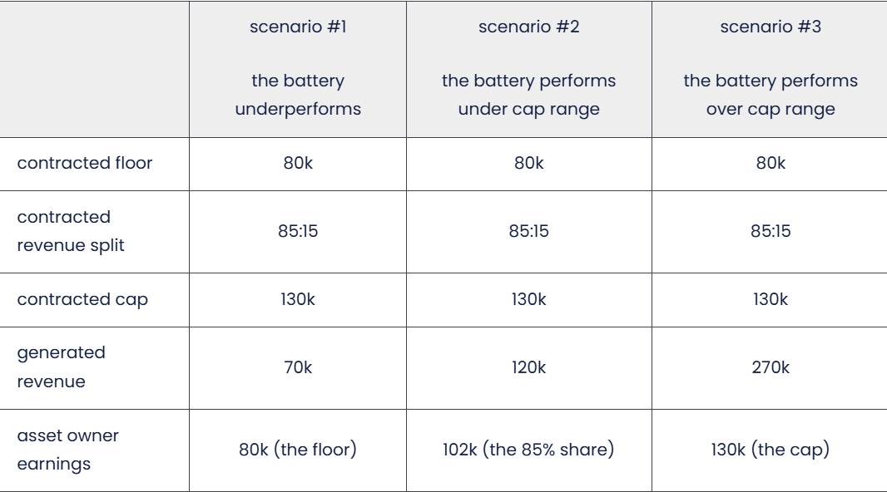
Understanding the Risk Landscape
Investors in BESS face distinct technical and financial risks that differ fundamentally from renewable generation assets. Technical risks revolve around battery degradation, supply chain complexity, and component sourcing, while financial risks center on revenue unpredictability and market saturation.
Battery Degradation and Performance Uncertainty
Lithium-ion batteries, the predominant technology in grid-scale BESS, experience capacity fade and increased internal resistance over time due to inherent electrochemical processes. This degradation directly affects revenue generation—a battery operating at 80% of its original capacity generates proportionally lower revenues, which lenders view as a threat to debt repayment ability. The cost of renewing battery cells to restore performance is notoriously difficult to predict, as lithium and raw material supply constraints can cause unexpected price spikes despite long-term cost reduction trends.
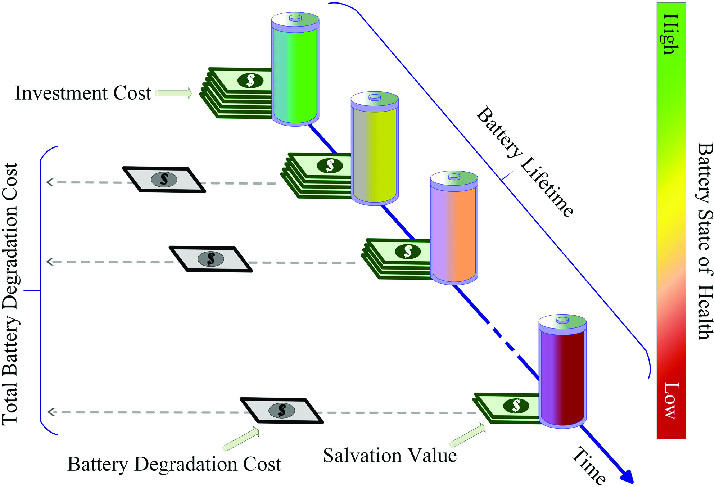
Addressing this risk typically requires robust performance monitoring systems that can detect underperforming modules and maintain operational availability, as transparency is crucial for investor confidence. Some lenders now require insurance policies that protect against performance failures, with performance insurance documented as capable of raising a project's credit rating from non-investment grade to BBB, significantly lowering financing costs.
Supply Chain and Sourcing Risks
BESS projects require nine months to two years to secure key components, typically transformers and battery cells. When batteries predominantly source from China and other Asian markets, geopolitical disruptions—such as Red Sea shipping incidents—can cause significant delays and cost overruns. For European developers, this creates an additional consideration: if a European battery system uses Chinese cells, developers must ensure the European system provider fully backs performance guarantees rather than relying on overseas suppliers with limited European presence, which increases perceived risk and complicates financing.
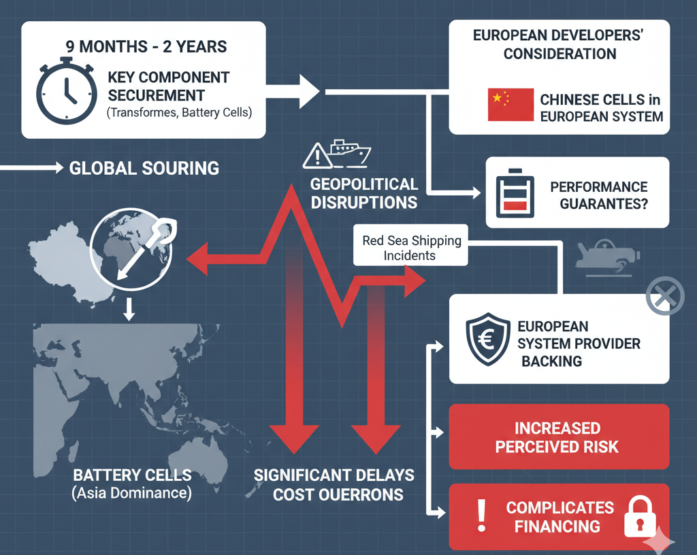
Market Revenue Volatility
The most persistent bankability challenge remains revenue predictability. Unlike PPAs for renewable generation, BESS projects typically combine multiple revenue streams with varying stability characteristics. These include energy arbitrage (buying low, selling high), ancillary services (frequency regulation, voltage support, black start capability), and capacity market compensation where available. The proportion contributed by each stream varies dramatically by market and project vintage.
From 2022 to 2024, merchant BESS revenues declined across most major markets due to ancillary service saturation and narrowing wholesale price spreads, driven by growing battery capacity deployment and falling gas-peaker costs. Ancillary service revenues—which had been a critical income source—diminished substantially as competition intensified. However, this revenue compression has been more than offset by dramatic reductions in BESS capital costs, with battery system costs declining approximately 30% from 2022 to 2024 in major markets, following an 80% reduction over the past decade.
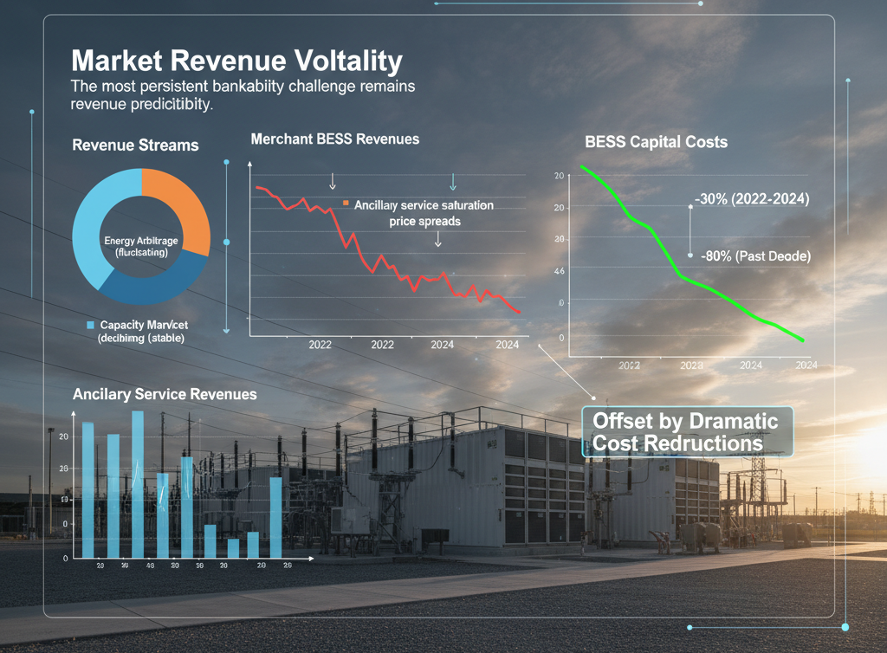
Revenue Models and Their Implications for Bankability
How BESS projects structure their revenue fundamentally determines their bankability and the cost of capital available. The spectrum of models reflects a deliberate trade-off between revenue certainty and exposure to market volatility.
Tolling and Long-Term Contracts
The most conservative approach involves tolling arrangements or long-term contracts where a third party guarantees specific payments for the storage service, regardless of market performance. These models offer stable, predictable cash flows that lenders find attractive and typically result in the lowest cost of capital. A developer retains minimal control over operations under pure tolling arrangements, which can paradoxically increase technical risk perception since the developer isn't responsible for optimization. Some lenders view this as a zero-sum trade-off between revenue certainty and operational control.
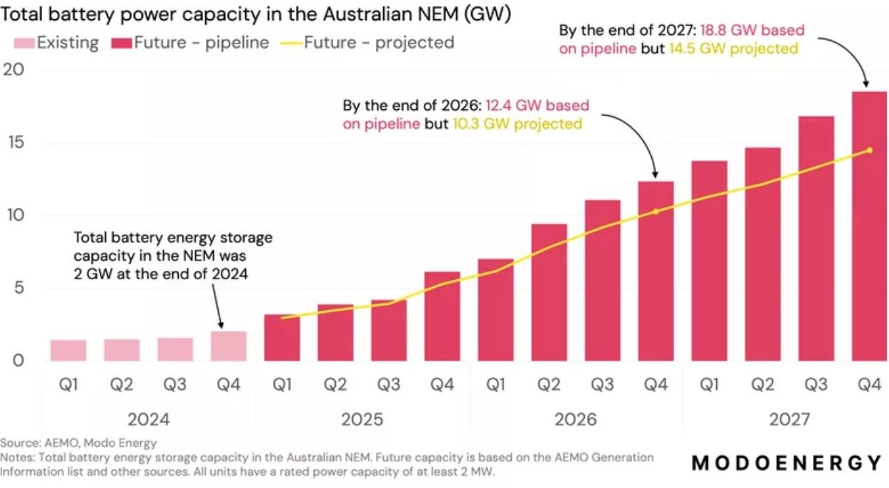
Market data from Australia's National Electricity Market (NEM) illustrates this structure's importance: 40% of committed BESS capacity due online through 2028 has long-term off-take contracts in place, while of privately financed capacity reaching financial investment decision, 75% has long-term offtake contracts. This demonstrates that long-term contracts remain crucial for project bankability, even as the market matures.
Merchant and Partially Contracted Models
In merchant models, BESS owners earn revenue entirely from wholesale markets without long-term contracts—meaning they capture the full upside during favorable price periods but face full downside risk during market downturns. This approach typically requires significantly higher equity investment, with debt sizing often limited to only 20-30% of total project cost in markets like ERCOT, reflecting lender caution around merchant returns.
Partially contracted models have emerged as a pragmatic middle ground, where projects secure contracts for a portion of their revenues while maintaining merchant exposure for the remainder. Around 16% of standalone BESS projects employ this structure, compared to 43% of solar-plus-storage hybrid projects. This blended approach enables projects to achieve reasonable cost of capital while retaining upside potential.
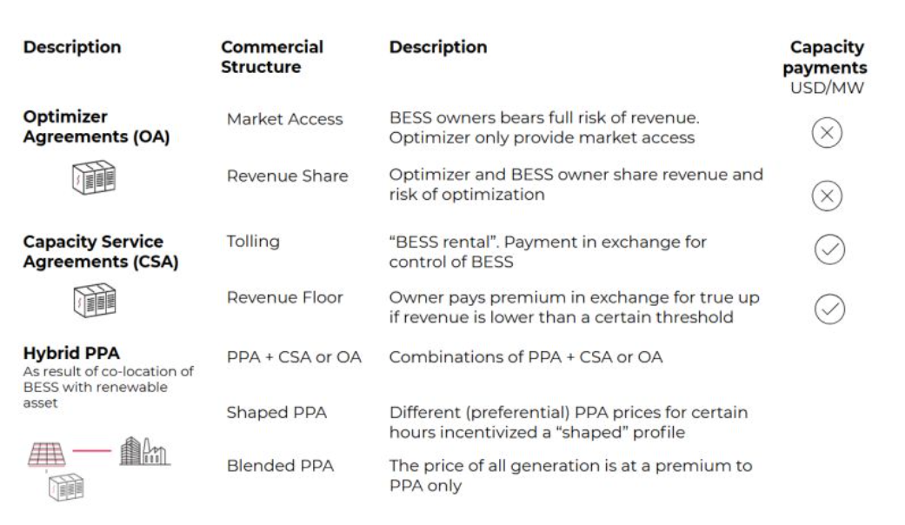
Current Investment Returns and Market Conditions
Actual performance data from operational BESS projects provides crucial insight into realistic return expectations. Results vary substantially based on revenue model, market location, and timing.
Real-World IRR Performance
South Australia's Hornsdale Power Reserve, one of the sector's flagship projects, illustrates both potential and risks. When the facility first achieved operation, investors enjoyed internal rates of return exceeding 25%, buoyed by exceptionally high ancillary services prices in the region's tight market. However, as additional batteries entered the market, ancillary service rates collapsed by over 70%, driving the project's IRR downward toward 15%—still attractive but substantially reduced.
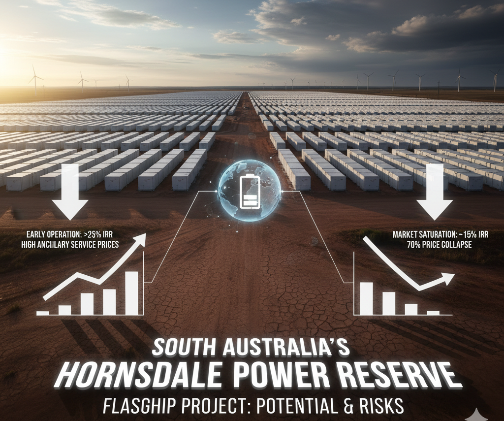
The Thurrock Storage Project in the United Kingdom, a 300 MW/600 MWh facility, achieved a 12% IRR during its first operational year, slightly below the initial 15% forecast due to unforeseen balancing market price dips during winter months. Meanwhile, a German merchant portfolio of five 100 MW/200 MWh sites achieved a 14% IRR through aggregation and optimization across multiple price zones, though the absence of capacity contracts introduced volatility when unusual wind patterns in Q2 reduced arbitrage spreads by 30%, testing liquidity buffers.
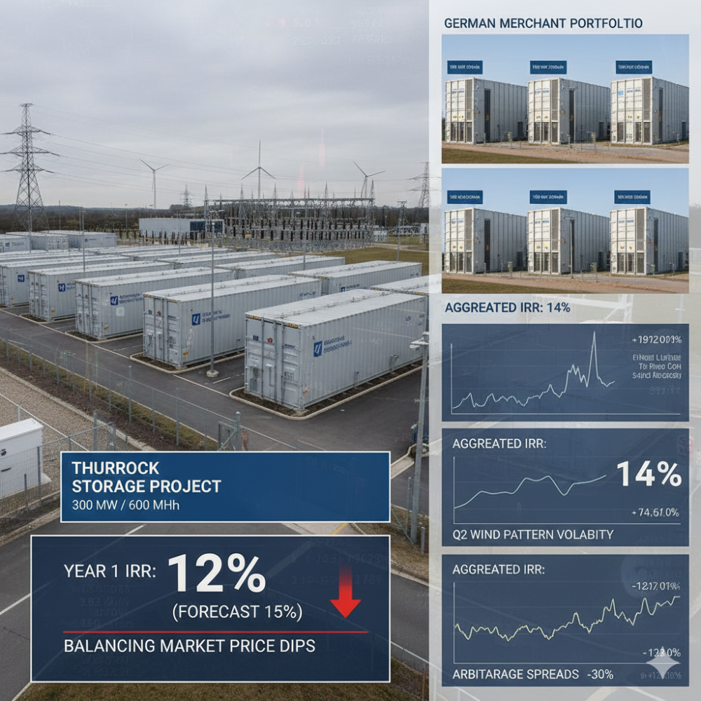
Market-Specific Opportunity Sets
The bankability case varies dramatically by geography based on underlying market fundamentals. Markets demonstrating strong investment potential share common characteristics: high renewable energy penetration driving intraday price volatility, rising electricity demand, transmission constraints, and declining thermal generation.
CAISO (California) presents relatively attractive returns for BESS through its combination of high solar penetration and long-term resource adequacy contracts that provide stable revenue streams. Capacity additions are expected to reach nearly 14 GWh this year, reflecting ongoing deployment demand despite increasing competitiveness. Australia's NEM benefits from structural shifts creating pricing volatility and multiple revenue streams, as coal phase-out combined with rapid renewable buildout heightens grid instability, making batteries increasingly essential. Chile offers strong fundamentals through rapid solar deployment and persistent transmission bottlenecks driving intraday volatility until anticipated 2032 transmission upgrades come online.
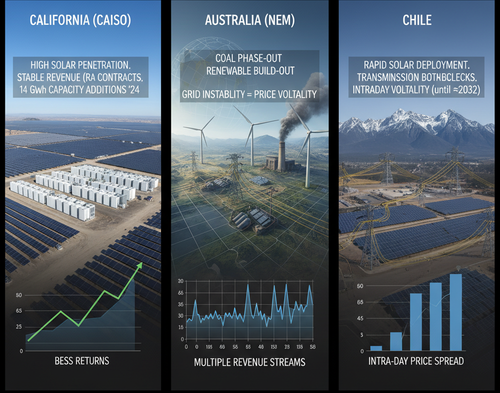
Emerging Markets Show Strong Potential
A watershed moment occurred in India's merchant BESS market during 2024, when merchant battery systems achieved profitability for the first time. This breakthrough reflects both steep cost declines and rising revenue opportunities from increasingly volatile power markets. Analysis suggests that new merchant BESS projects commissioned in 2025 could deliver internal rates of return of 17% by participating in day-ahead market arbitrage alone, with returns potentially reaching 21-24% when ancillary services are included—a compelling return profile for grid-scale infrastructure investment.
Co-Locating BESS with Renewable Generation
Pairing BESS with solar or wind farms represents an increasingly important development in improving project economics. Co-located BESS systems unlock multiple value streams beyond standalone battery operations and substantially enhance financial performance.
For a typical 100 MW solar farm paired with a 50 MW/200 MWh battery, hybrid project IRRs can increase from mid-teens to low-20% levels through combined cost savings and diverse revenue sources. This financial improvement reflects several factors: reduced interconnection costs through shared infrastructure, ability to participate in capacity markets as a hybrid asset rather than standalone storage, and enhanced operational flexibility through integrated renewable-plus-storage optimization.
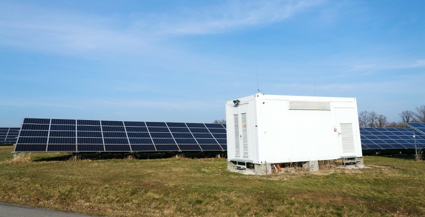
Hybrid projects also enjoy superior access to tax equity financing compared to standalone BESS, because contracted solar revenues provide long-term certainty more attractive to tax equity investors. This improved financing accessibility translates to lower overall cost of capital for hybrid projects.
Tax Structure and Financing Innovation
The Investment Tax Credit (ITC) and other federal incentives have transformed the financing landscape for BESS, though the benefits vary significantly based on project structure and ownership model.
Under Sections 48 and 48E of the Internal Revenue Code, BESS projects can access substantial federal tax credits, with monetization strategies including traditional tax equity partnerships or direct sale of tax credits. Standalone BESS projects present distinct financing challenges compared to hybrid projects: in the first half of 2025, standalone storage deal structures were split nearly evenly between tax equity (49.5%) and direct transfer deals (46.5%), with only 3.8% including preferred equity. By contrast, solar-plus-storage deals were 72% tax equity, reflecting the greater bankability of hybrid structures to traditional tax equity investors.
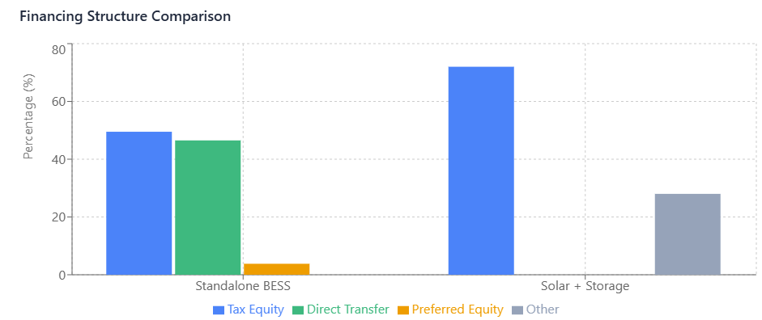
The high percentage of merchant projects explains why standalone BESS relies more heavily on direct transfers to monetize tax credits, which can reduce total possible credit monetization by roughly 25% compared to stepped-up structures. This structural disadvantage particularly impacts standalone merchant BESS projects, effectively raising their cost of capital and extending project timelines.
Critical Success Factors for Bankability
Based on current market practice and financing requirements, several factors determine whether BESS projects can access capital on reasonable terms:
1. Credible Supply Chains and Strong Counterparties: Lenders require demonstrable supply chain clarity and strong counterparties during construction and operation. Developers must provide detailed sourcing plans addressing component sourcing, manufacturer track record, and warranty provisions.
2. Revenue Framework Before Financing: Regardless of whether projects pursue contracted or merchant revenue models, the revenue framework must be clearly defined before financing discussions begin. This requires project-specific forecasts across multiple scenarios, including downside cases that banks will use for underwriting. Static back testing of historical performance is insufficient, as revenue saturation can occur rapidly and market conditions can shift within a single year.
3. Sufficient Financial Buffers: Projects need financial cushions sized appropriately to the perceived overall risk. The buffer size depends on revenue model volatility, geographic market exposure, and counterparty creditworthiness. Merchant projects require substantially larger buffers than contracted projects.
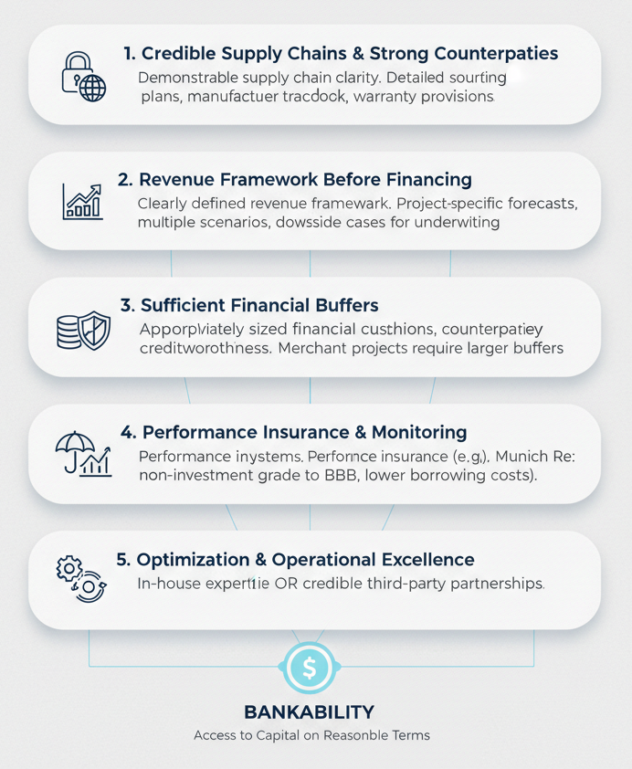
4. Performance Insurance and Monitoring: Robust monitoring systems and performance insurance demonstrably improve credit ratings and reduce financing costs. Munich Re's experience shows insurance can raise credit ratings from non-investment grade to BBB, substantially lowering borrowing costs.
5. Optimization and Operational Excellence: For partially contracted and merchant projects, demonstrated capability for revenue optimization and operational excellence distinguishes bankable projects from non-bankable ones. This requires either in-house expertise or credible third-party optimization partnerships.
The Verdict: Conditional Bankability with Evolving Opportunities
BESS is bankable today—but the statement requires substantial qualification. Bankability increasingly depends on specific revenue model choices, geographic market selection, and project structure rather than being a binary yes-or-no proposition for the sector broadly.
- Contracted or hybrid projects in markets with strong fundamentals represent the most straightforward path to institutional capital. Projects securing long-term offtake agreements, particularly when paired with renewable generation, access the broadest pool of lenders and investors, with generally lower cost of capital reflecting reduced revenue risk.
- Merchant and partially contracted standalone BESS projects require more sophisticated risk management but remain viable investments for experienced developers and operators. The improving cost structure—with capital costs declining 30% in recent years—provides a powerful counterbalance to revenue compression, maintaining compelling returns even as ancillary service saturation reduces merchant revenues.

For investors evaluating BESS opportunities, the bankability assessment should focus on:
The revenue model's revenue mix—projects should not depend exclusively on single revenue streams, as saturation risk applies to all streams. Diversification across energy arbitrage, ancillary services, and capacity compensation where available substantially improves resilience.
- Market fundamentals supporting sustained volatility, particularly high renewable penetration driving intraday pricing volatility and grid constraints creating multiple revenue opportunities. Markets with these characteristics support more attractive returns and lower risk profiles.
- Supply chain transparency and operational capabilities, as these directly impact both lender confidence and actual project performance. Smaller developers often struggle to afford comprehensive due diligence but can partially overcome this through high-quality components and transparent structures.
- The financial structure's flexibility, particularly access to tax credit monetization strategies that optimize capital deployment. Direct transfer deals, while reducing tax credit value, provide access to capital for merchant projects that might otherwise struggle to attract tax equity.
As the sector matures and cost structures continue improving, the bankability question shifts from whether BESS can be financed to how to structure specific projects to minimize cost of capital and optimize returns. The window for establishing long-term contracted revenue streams may narrow as markets saturate, making current contracting opportunities particularly valuable for projects under development.